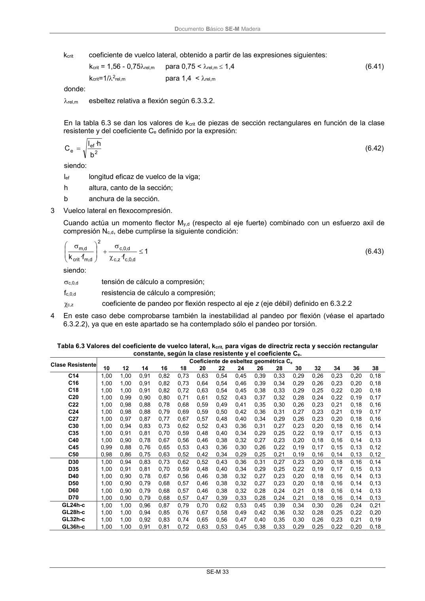

DB-SE-M · 3 Vuelco lateral en flexocompresión. · versión 2019-12-20
SHA256: 26b5819839ebfda78b0b119c5e76a0a37773b0d763c05688541870075df93718 · página física 39 de 132 · métodos de encabezado
solo si están cotejados.
Formatos: Markdown · JSON de bloques · PDF p. 39 · imagen PNG
Documento Básico SE-M Madera SE-M 33 kcrit coeficiente de vuelco lateral, obtenido a partir de las expresiones siguientes: kcrit = 1,56 - 0,75rel,m para 0,75 < rel,m 1,4 (6.41) kcrit=1/2rel,m para 1,4 < rel,m donde: rel,m esbeltez relativa a flexión según 6.3.3.2. En la tabla 6.3 se dan los valores de kcrit de piezas de sección rectangulares en función de la clase resistente y del coeficiente Ce definido por la expresión: 2 ef e b h· l C (6.42) siendo: lef longitud eficaz de vuelco de la viga; h altura, canto de la sección; b anchura de la sección. 3 Vuelco lateral en flexocompresión. Cuando actúa un momento flector My,d (respecto al eje fuerte) combinado con un esfuerzo axil de compresión Nc,d, debe cumplirse la siguiente condición: 1 f· f· k d , 0 ,c z,c d , 0 ,c 2 d , m crit d , m (6.43) siendo: c,0,d tensión de cálculo a compresión; fc,0,d resistencia de cálculo a compresión; χc,z coeficiente de pandeo por flexión respecto al eje z (eje débil) definido en 6.3.2.2 4 En este caso debe comprobarse también la inestabilidad al pandeo por flexión (véase el apartado 6.3.2.2), ya que en este apartado se ha contemplado sólo el pandeo por torsión. Tabla 6.3 Valores del coeficiente de vuelco lateral, kcrit, para vigas de directriz recta y sección rectangular constante, según la clase resistente y el coeficiente Ce. Clase Resistente Coeficiente de esbeltez geométrica Ce 10 12 14 16 18 20 22 24 26 28 30 32 34 36 38 C14 1,00 1,00 0,91 0,82 0,73 0,63 0,54 0,45 0,39 0,33 0,29 0,26 0,23 0,20 0,18 C16 1,00 1,00 0,91 0,82 0,73 0,64 0,54 0,46 0,39 0,34 0,29 0,26 0,23 0,20 0,18 C18 1,00 1,00 0,91 0,82 0,72 0,63 0,54 0,45 0,38 0,33 0,29 0,25 0,22 0,20 0,18 C20 1,00 0,99 0,90 0,80 0,71 0,61 0,52 0,43 0,37 0,32 0,28 0,24 0,22 0,19 0,17 C22 1,00 0,98 0,88 0,78 0,68 0,59 0,49 0,41 0,35 0,30 0,26 0,23 0,21 0,18 0,16 C24 1,00 0,98 0,88 0,79 0,69 0,59 0,50 0,42 0,36 0,31 0,27 0,23 0,21 0,19 0,17 C27 1,00 0,97 0,87 0,77 0,67 0,57 0,48 0,40 0,34 0,29 0,26 0,23 0,20 0,18 0,16 C30 1,00 0,94 0,83 0,73 0,62 0,52 0,43 0,36 0,31 0,27 0,23 0,20 0,18 0,16 0,14 C35 1,00 0,91 0,81 0,70 0,59 0,48 0,40 0,34 0,29 0,25 0,22 0,19 0,17 0,15 0,13 C40 1,00 0,90 0,78 0,67 0,56 0,46 0,38 0,32 0,27 0,23 0,20 0,18 0,16 0,14 0,13 C45 0,99 0,88 0,76 0,65 0,53 0,43 0,36 0,30 0,26 0,22 0,19 0,17 0,15 0,13 0,12 C50 0,98 0,86 0,75 0,63 0,52 0,42 0,34 0,29 0,25 0,21 0,19 0,16 0,14 0,13 0,12 D30 1,00 0,94 0,83 0,73 0,62 0,52 0,43 0,36 0,31 0,27 0,23 0,20 0,18 0,16 0,14 D35 1,00 0,91 0,81 0,70 0,59 0,48 0,40 0,34 0,29 0,25 0,22 0,19 0,17 0,15 0,13 D40 1,00 0,90 0,78 0,67 0,56 0,46 0,38 0,32 0,27 0,23 0,20 0,18 0,16 0,14 0,13 D50 1,00 0,90 0,79 0,68 0,57 0,46 0,38 0,32 0,27 0,23 0,20 0,18 0,16 0,14 0,13 D60 1,00 0,90 0,79 0,68 0,57 0,46 0,38 0,32 0,28 0,24 0,21 0,18 0,16 0,14 0,13 D70 1,00 0,90 0,79 0,68 0,57 0,47 0,39 0,33 0,28 0,24 0,21 0,18 0,16 0,14 0,13 GL24h-c 1,00 1,00 0,96 0,87 0,79 0,70 0,62 0,53 0,45 0,39 0,34 0,30 0,26 0,24 0,21 GL28h-c 1,00 1,00 0,94 0,85 0,76 0,67 0,58 0,49 0,42 0,36 0,32 0,28 0,25 0,22 0,20 GL32h-c 1,00 1,00 0,92 0,83 0,74 0,65 0,56 0,47 0,40 0,35 0,30 0,26 0,23 0,21 0,19 GL36h-c 1,00 1,00 0,91 0,81 0,72 0,63 0,53 0,45 0,38 0,33 0,29 0,25 0,22 0,20 0,18
